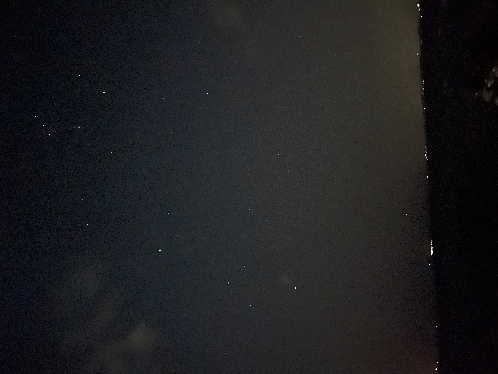
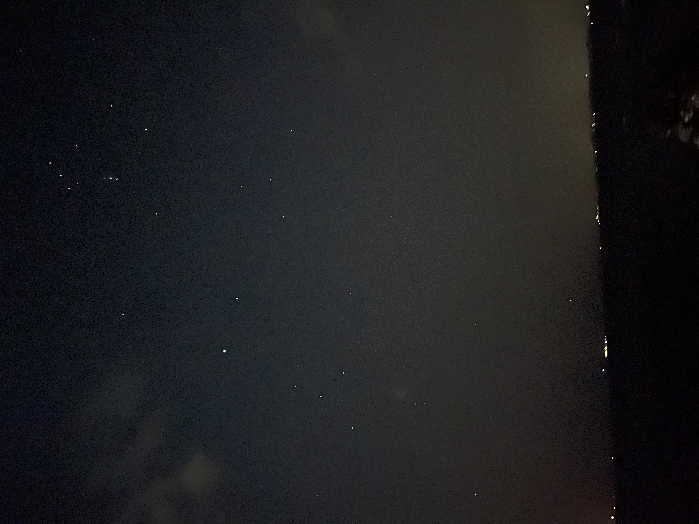
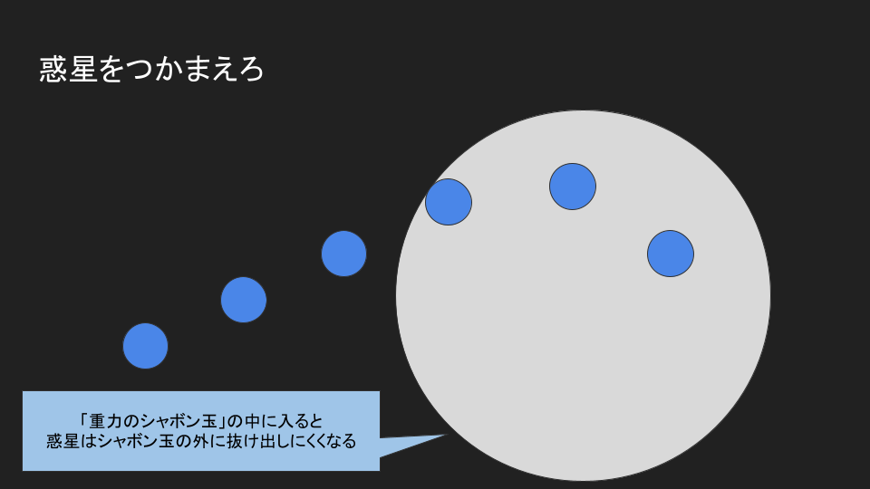
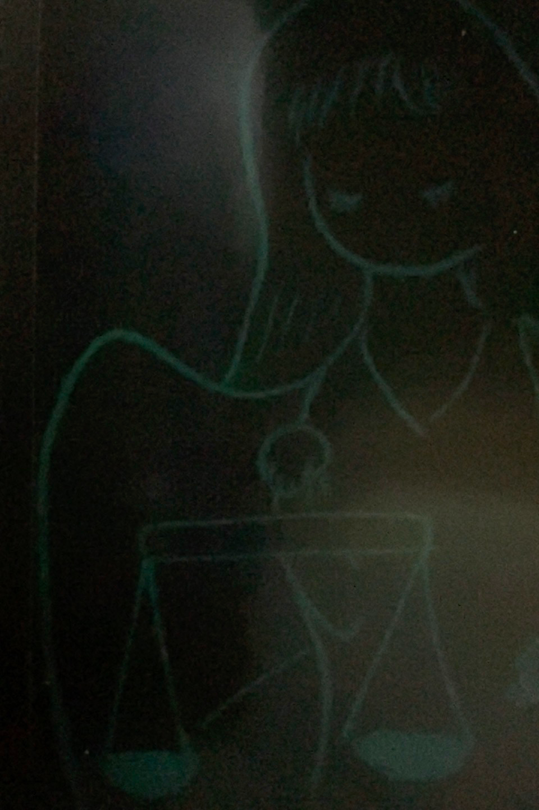

豊明ジュニア天文クラブとは
現在、豊明市立栄小学校を中心に活動している小中学生向けの天文クラブです。
 

4月の活動
宇宙科学シリーズ : 惑星を捕まえろ

神話シリーズ : 正義の女神アストラエア

主な活動内容
観望会案内・星空ガイド
その時期に見られる天文の話題を中心に紹介します。
天体に関する話題の紹介
実はどの話題も高校, 大学レベルの知識が必要で、研究者として活動するにはそれ相応の理科や数学が必要になります。
一方でこれらの考え方は身近な現象のアナロジーとして出てきたものというイメージを持って欲しいと思います。
惑星を捕まえろ(ニュートン, ガウスの重力場)
恒星の輝き(プランク,アインシュタインの量子仮説と核融合反応)
光の発生と吸収(黒体輻射, 光電効果)
蛍光灯の光と太陽の光(核融合反応)
超新星爆発(中性子星:フェルミ縮退, 重力波の発生)
光が曲がる(アインシュタインの一般相対論)
自由落下中の光は直進する(等価原理, ビアンキの恒等式)
重力場中の宇宙空間の光は曲がる
豊明中学校にあったプラネタリウムの管理・維持
豊明秋祭り出展
豊明春祭り出展
これまでの活動はこちら